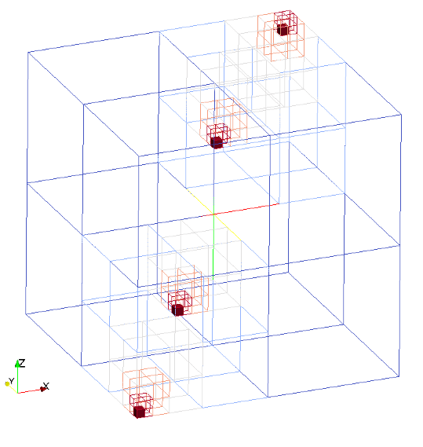

Points are defined in the configuration file through canonoical geometry kind with an origin.
Valid definition:
geometry = {
kind = 'canoND',
object = {
origin = { 0.0,0.0,0.0 }
}
}
geometry = {
kind = 'canoND',
object = {
{
origin = { 0.0,0.0,0.0 }
},
{
origin = { 1.0,0.0,0.0 }
},
}
}
Seeder file to generate the mesh with multiple point obstacle is given below:
-- This seeder configuration file shows an example to create a point
-- ------------------------------------------------------------------------- --
-- Location to write the mesh in.
-- Note the trailing path seperator, needed, if all mesh files should be in a
-- directory. This directory has to exist before running Seeder in this case!
folder = 'mesh/'
-- Some comment, you might want to put into the mesh file for later reference.
comment = 'Simple Sample Seeder Mesh'
-- Debug output can be used to output prelimnary tree in restart format
-- and this restart file can be converted to vtu format by Harvester
-- debug = { debugMode = true, debugMesh = 'debug/' }
-- Bounding cube: the root node of the octree, defining the complete universe,
-- from which all elements are derived by recursive bisection.
-- The origin is the corner from which on the cube is spanned with the given
-- length in each direction.
bounding_cube = { origin = {-1.0, -1.0, -1.0},
length = 2.0 }
-- A minimum level, by which all parts in the computational domain should at
-- least be resolved with. Default is 0.
minlevel = 6
-- *********************** Table of spatial objects *********************** --
-- Each spatial object is defined by an attribute and some geometric entity
-- attached to this attribute. Attributes might be defined multiple times.
-- Attributes are described by a kind (boundary, seed or refinement), a level
-- and maybe further kind specific values, like a label for the boundary.
spatial_object = {
{
-- Defining a domain boundary
attribute = { kind = 'boundary', -- or seed, refinement
label = 'CornerPoint', -- some label to identify the boundary
-- condition
},
geometry = { -- points created inside domain
kind = 'canoND',
object = {{
origin = { -1.0,-1.0,-1.0}
},
{
origin = { 0.9,0.9,0.9}
}
}
}
},
{
-- Defining a domain boundary
attribute = { kind = 'boundary', -- or seed, refinement
label = 'Inside', -- some label to identify the boundary
-- condition
level = 1 -- level to refine this object with,
-- default = 0
},
geometry = {
kind = 'canoND',
object = {{ -- 2 more points created inside domain
origin = { -0.5,-0.5,-0.5}
},
{
origin = { 0.0,0.0,0.5}
}
}
}
},
{
-- Defining a seed to identify the part of the computational domain in
-- the universe cube.
attribute = { kind = 'seed' },
geometry = { -- single point definition with a canoND object.
kind = 'canoND',
object = { origin = {-0.0, -0.0, -0.0} }
}
}
} -- end of spatial objects
-- ************************************************************************ --
The image generated with multiple point obstacles from the above code: 
Example lua file is available at testsuite/point/seeder.lua